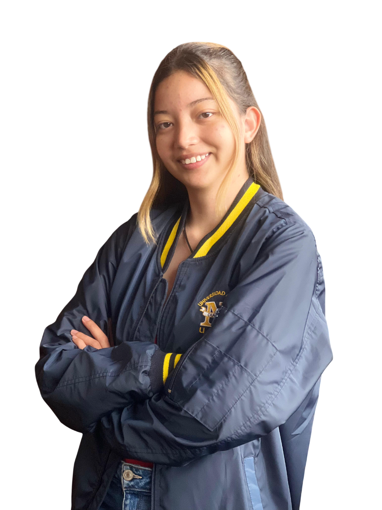
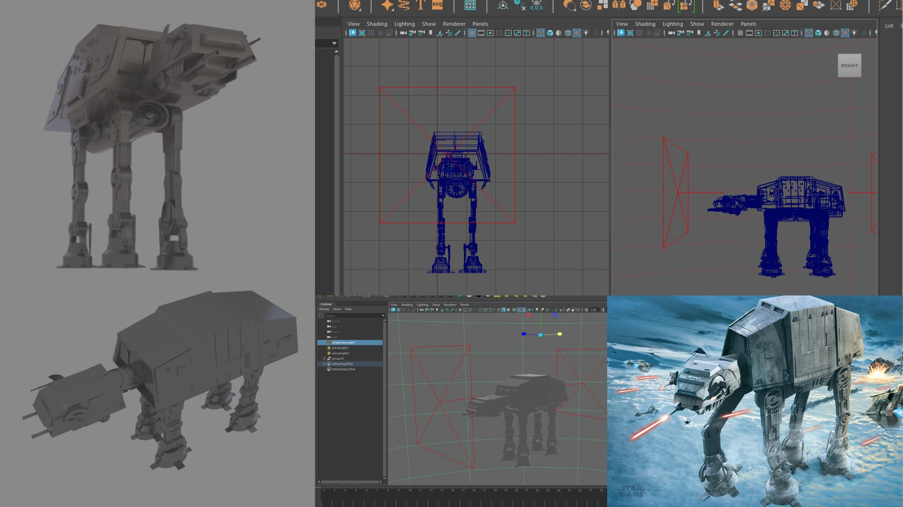
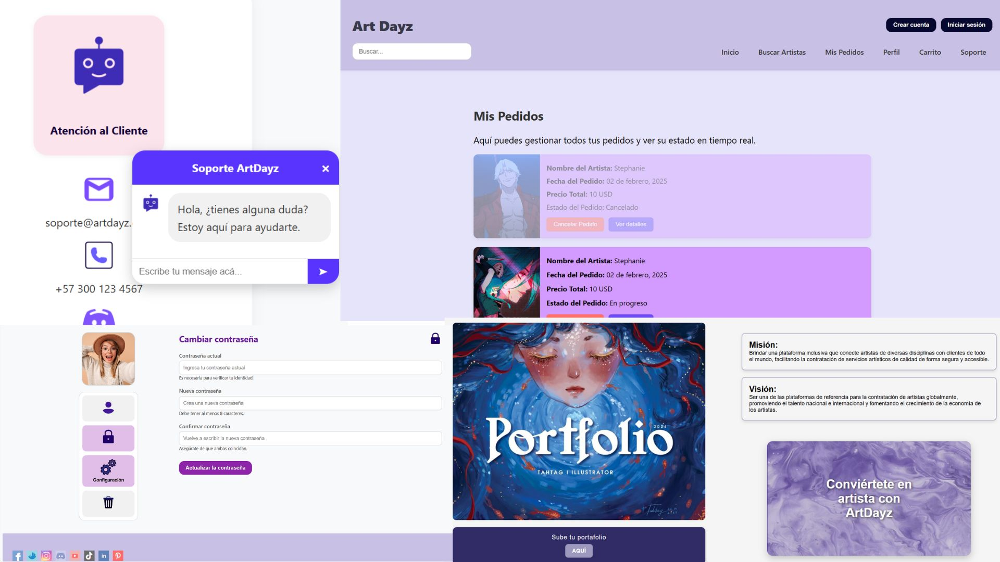
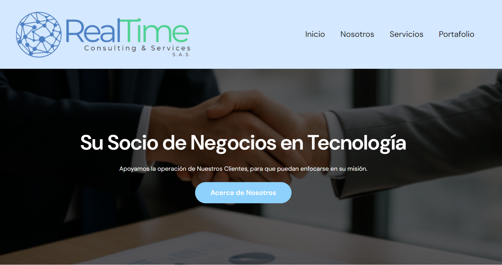
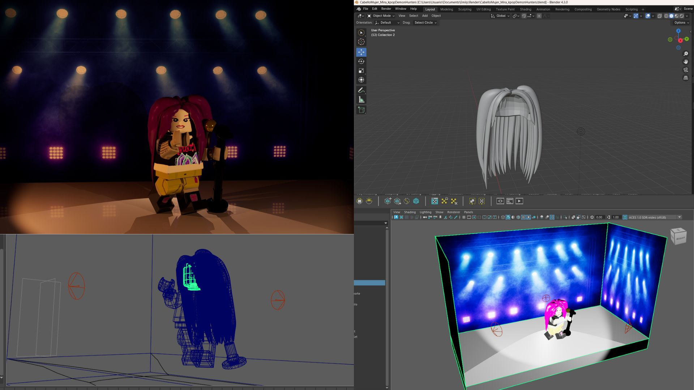

Diseño + tecnología
Conecto decisiones visuales con soluciones técnicas para crear productos digitales funcionales.
Soy Emily Mora Llanos, Ingeniera en Multimedia enfocada en UX/UI, diseño de interfaces y experiencias interactivas. Combino diseño, tecnología y narrativa visual para convertir ideas en experiencias claras, funcionales y atractivas.

Mi perfil conecta el diseño y la tecnología para crear interfaces y experiencias digitales intuitivas, visualmente coherentes y pensadas para las personas.
Como Ingeniera en Multimedia, puedo participar desde la conceptualización y UX/UI hasta la implementación, animación, programación e integración de recursos multimedia.
Conecto decisiones visuales con soluciones técnicas para crear productos digitales funcionales.
Me interesa que el usuario participe, explore y entienda el contenido a través de la interacción.
Integro UX/UI, programación, animación, 3D y narrativa visual según las necesidades del proyecto.
Explora una selección de proyectos de UX/UI, desarrollo, animación, 3D y experiencias interactivas.

Experiencia digital interactiva que explora la relación entre objetos heredados y adquiridos, representados mediante anillos y libros, y cómo el acceso a estos objetos se encuentra condicionado por el contexto y el recorrido del usuario.
Haz clic para conocer el proyecto completo
Videojuego de realidad virtual desarrollado para Meta Quest 2 como parte de la conmemoración de los 25 años del programa de Ingeniería en Multimedia de la Universidad Militar Nueva Granada.
Haz clic para conocer el proyecto completo
Proyecto de modelado 3D basado en un AT-AT del universo Star Wars, enfocado en geometría, proporciones, detalles estructurales y preparación para renderizado.

Proyecto enfocado en el estudio y desarrollo de animaciones tipo idle para personajes de videojuegos.

Corto animado realizado en formato filminuto. Incluyó storyboard, diseño de personajes y escenarios, así como animación mediante ciclos de caminata.

Plataforma web orientada a artistas, enfocada en publicación de portafolios, monetización de productos y oferta de servicios creativos.

Diseño y desarrollo visual de página web corporativa para empresa enfocada en ciberseguridad y ciberresiliencia.

Animación 3D basada en una escena de referencia de Alice in Borderland.

Aplicación interactiva tipo juego diseñada para transformar la experiencia ASMR en una interacción activa.

Videojuego educativo enfocado en la enseñanza de conceptos básicos de química y formación de polímeros.

Modelado 3D de personaje estilo Lego inspirado en K-pop Demon Hunters.
Conoce mi formación, herramientas, experiencia y proyectos con mayor detalle.
Universidad Militar Nueva Granada
Colegio Calasanz de Pereira